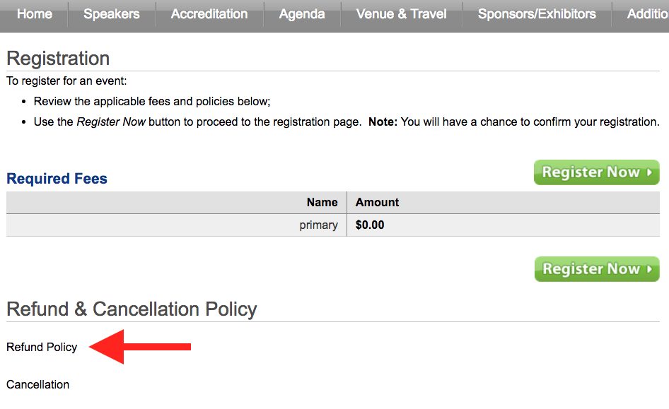

Activities: Front Matter
Manage Content
The Add Content button and the Front Matter List display under the Manage Content heading in the Front Matter Dialog
Enduring Activities
Add Content
Clicking the Add Content button opens the Front Matter Editor.
Content Type*
Select One

Select One
Required
Faculty Disclosure
This required custom content, generated by the Coordinator, appears in the Activity Home tab of the Enduring Activity page.
Needs Statement
This required custom content, generated by the Coordinator, states the learning need for the activity, and appears in the Activity Home tab of the Enduring Activity page.
Objectives
This required custom content, generated by the Coordinator, states the learning objectives for the activity, and appears in the Activity Home tab of the Enduring Activity page.
Target Audience
This required custom content, generated by the Coordinator, lists the profession(s) and specialty(ies) served by the activity, and appears in the Activity Home tab of the Enduring Activity page.
Optional
Accreditation Override
This optional custom content, overriding the system generated content, provides the required language for accreditation of the activity in circumstances not covered by the default language. Accreditation statements appear in the Activity Home tab of the Enduring Activity page.
Acknowledgment
This optional custom content, overriding the system generated content, provides acknowledgement of Sponsors (Clients) for the activity in circumstances not covered by the default language. Acknowledgement statements appear in the Activity Home tab of the Enduring Activity page.
CHES Areas of Responsibility
Statements pertaining to the Seven Areas of Responsibility for a Certified Health Education Specialist as they relate to the activity. CHES statements appear in the Activity Home tab of the Enduring Activity page.
Certificate Footer Message
This optional custom content, overriding the system generated content, provides custom text for the footer of the certificate.
Custom

This optional custom content, generated by the Coordinator, creates a custom section of text underneath a custom heading on the Activity Home tab of the Live Event page.
Heading

This optional custom content, generated by the Coordinator, ... appears in the Activity Home tab of the Live Event page.
Live Events
Add Content
Clicking the Add Content button opens the Front Matter Editor.
Content Type*
Select One

Select One
Required
Objectives
This required custom content, generated by the Coordinator, states the learning objectives for the activity, and appears in the Accreditation tab of the Live Event page.
Target Audience
This required custom content, generated by the Coordinator, lists the profession(s) and specialty(ies) served by the activity, and appears in the Accreditation tab of the Live Event page.
Optional
Accommodations
This optional custom content, generated by the Coordinator, details accommodations near the Live Event Venue and appears in the Home tab of the Live Event page.
Accreditation Override
This optional custom content, overriding the system generated content, provides the required language for accreditation of the activity in circumstances not covered by the default language. Accreditation statements appear in the Home AND Accreditation tabs of the Live Event page.
Acknowledgment
This optional custom content, overriding the system generated content, provides acknowledgement of Sponsors (Clients) for the activity in circumstances not covered by the default language. Acknowledgement statements appear in the Home tab of the Live Event page.
Additional Info
This optional custom content, generated by the Coordinator, details information such as parking arrangements and appears in the Additional Info tab of the Live Event page.
Agenda

This optional custom content, overriding the system generated content, defines the agenda for an activity in circumstances not covered by the default agenda and appears in the Agenda tab of the Live Event page.
CHES Areas of Responsibility
Statements pertaining to the Seven Areas of Responsibility for a Certified Health Education Specialist as they relate to the activity. CHES statements appear in the Accreditation tab of the Live Event page.
Cancellation*
This optional custom content, overriding the system generated content, provides a cancellation policy and instructions in circumstances not covered by the default cancellation policy. The cancellation policy appears at the bottom of the Registration Form.
Certificate Footer Message
This optional custom content, overriding the system generated content, provides custom text for the footer of the certificate.
Custom
This optional custom content, generated by the Coordinator, creates a custom section of text underneath a custom heading on the Home tab of the Live Event page.
Faculty Disclosure
This optional custom content, generated by the Coordinator, appears in the Accreditation tab of the Live Event page.
Needs Statement
This optional custom content, generated by the Coordinator, states the learning need for the activity, and appears in the Accreditation tab of the Live Event page.
Offline Registration Note

This optional custom content, overriding the system generated content, provides an offline registration note in circumstances not covered by the default message. The offline registration note appears underneath the Register Online button, in the right hand sidebar of the Live Event page, when the Register Online button is clicked.
Overview
This optional custom content, generated by the Coordinator, provides an overview of the Live Event and appears in the Home tab of the Live Event page.
PI - Project AIM

This optional system generated content, requires Activity Type [Live] Perform. Improvement be selected during Activity Code Setup and that Designed to Change Performance? be checked in the Activity Details Dialog under subheading Accreditation. The PICME tab will appear in the View Reports Dialog Information pertaining to Project AIM is available in the PICME reporting tab.
PI - Project Data Collection

See PI - Project AIM above
Click on the indicated link to download the report.
PI - Project Data Source
See PI - Project AIM and PI - Project Data Collection above
View AIM, Data Collection, Data Sources in the indicated portions of the report.
Refund Policy 
This optional custom content, overriding the system generated content, provides a refund policy and instructions in circumstances not covered by the refund policy. The cancellation policy appears at the bottom of the Registration Form.
Save the Date
This optional custom content, overriding the system generated content, appears in the Venue & Travel tab of the Live Event page.
Special Services
This optional custom content, overriding the system generated content, provides an Special Services message in circumstances not covered by the default message. The Special Services message appears underneath the Register Online, Download Materials, and social media buttons, in the right hand sidebar of the Live Event page.
Sponsors/Exhibitors
This optional custom content, overriding the system generated content, appears in the Sponsors/Exhibitors tab of the Live Event page.
Notes:
All required front matter items must be created in order to display a Live Event page in a format other than Save the Date.